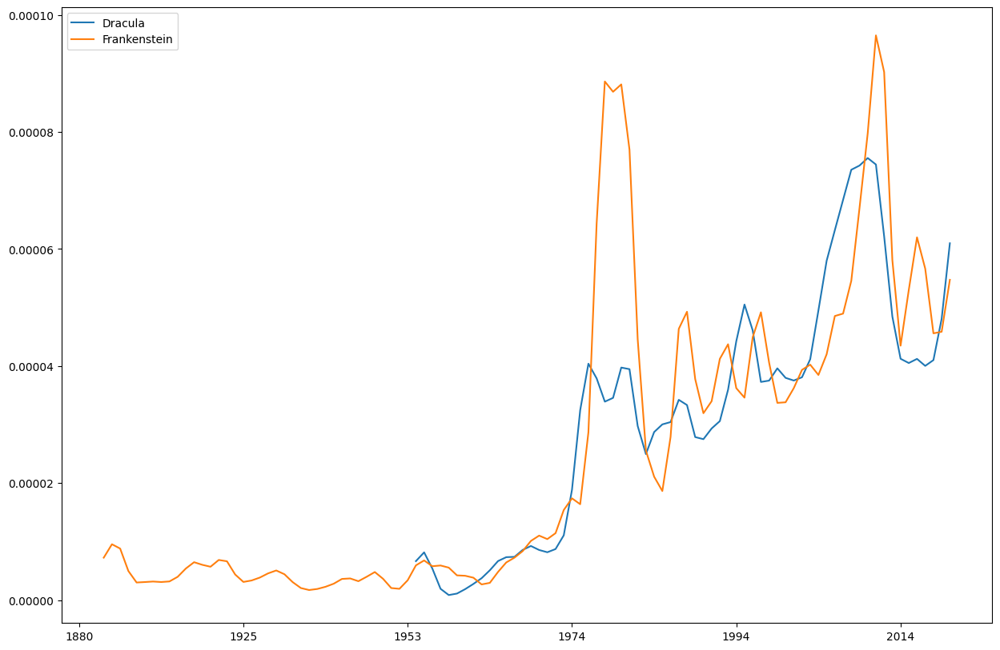

dhlab class demo
Contents
dhlab class demo#
import dhlab as dh
Corpus#
dh.Corpus??
Init signature:
dh.Corpus(
doctype=None,
author=None,
freetext=None,
fulltext=None,
from_year=None,
to_year=None,
from_timestamp=None,
to_timestamp=None,
title=None,
ddk=None,
subject=None,
lang=None,
limit=10,
order_by='random',
)
korpus = dh.Corpus(doctype="digibok", title="Dracula")
korpus.frame.iloc[:5, [0,1,2,3,9]]
| dhlabid | urn | title | authors | year | |
|---|---|---|---|---|---|
| 0 | 100276465 | URN:NBN:no-nb_digibok_2016011248064 | Dracula | Mucci , Michael / Valgermo , Finn / Stoker , B... | 2009 |
| 1 | 100359518 | URN:NBN:no-nb_digibok_2017122268008 | Dracula : av Lars Saabye Christensen : fritt e... | Christensen , Lars Saabye / Stoker , Bram | 2000 |
| 2 | 100384102 | URN:NBN:no-nb_digibok_2018121368009 | Dracula | Arnesson , Malin / Stoker , Bram / Store , Gur... | 2004 |
| 3 | 100138345 | URN:NBN:no-nb_digibok_2013013008275 | Dracula house | Flikke , Nina | 1986 |
| 4 | 100540112 | URN:NBN:no-nb_digibok_2011052408015 | Dracula | Stoker , Bram / Carling , Bjørn | 2004 |
Conkordans#
dh.Concordance??
dh.Concordance(corpus=None, query=None, window=20, limit=500)
korpus.conc("Dracula").show()
| link | concordance | |
|---|---|---|
| 102 | URN:NBN:no-nb_digibok_2013060406055 | ... helvete , og i et manuskript blir nettopp denne Dracula betegnet som « wampyr » , noe vi kan forstå bare så... |
| 357 | URN:NBN:no-nb_digibok_2014052008098 | Dracula : Dead and Loving It ( 1995 , am. , regi Mel Brooks ; Leslie Nielsen som Dracula ) |
| 328 | URN:NBN:no-nb_digibok_2014052008098 | DRACULA |
| 10 | URN:NBN:no-nb_digibok_2013062438048 | ... Lucy blir et lett bytte for Dracula som gjør henne til sitt første offer etter ankomsten til Whitby , og... |
| 250 | URN:NBN:no-nb_digibok_2014052008098 | DRACULA ! |
| 162 | URN:NBN:no-nb_digibok_2014052008098 | DRACULA i |
| 1 | URN:NBN:no-nb_digibok_2013013008275 | Dracula House |
| 76 | URN:NBN:no-nb_digibok_2010020103031 | ... - På den andre siden av Dracula ny Hopkins takket ja til rollen som Dr. Abra- finner vi van Helsing... |
| 193 | URN:NBN:no-nb_digibok_2014052008098 | DRACULA |
| 235 | URN:NBN:no-nb_digibok_2014052008098 | DRACULA I |
Frekvens#
dh.Counts??
dh.Counts(corpus=None, words=None)
korpus.count().display_names()
| Dracula : fritt etter Bram Stokers roman | Dracula | Bram Stoker's Dracula | Dracula | Dracula house | Dracula : et dansedrama i tre akter basert på Bram Stokers roman | Dracula | Dracula | Dracula | |
|---|---|---|---|---|---|---|---|---|---|
| . | 3268.0 | 8284.0 | 578.0 | 8099.0 | 287.0 | 99.0 | 8162.0 | 127.0 | 30.0 |
| : | 1435.0 | 660.0 | 36.0 | 666.0 | 19.0 | 4.0 | 672.0 | 7.0 | 0.0 |
| , | 1384.0 | 9534.0 | 368.0 | 9574.0 | 140.0 | 144.0 | 9611.0 | 80.0 | 23.0 |
| er | 751.0 | 2416.0 | 171.0 | 2423.0 | 41.0 | 26.0 | 2439.0 | 0.0 | 3.0 |
| ? | 646.0 | 521.0 | 135.0 | 519.0 | 10.0 | 1.0 | 513.0 | 41.0 | 0.0 |
| ... | ... | ... | ... | ... | ... | ... | ... | ... | ... |
| Elvestad | 0.0 | 0.0 | 0.0 | 0.0 | 0.0 | 0.0 | 0.0 | 0.0 | 2.0 |
| Halgeir | 0.0 | 0.0 | 0.0 | 0.0 | 0.0 | 0.0 | 0.0 | 0.0 | 2.0 |
| Heien | 0.0 | 0.0 | 0.0 | 0.0 | 0.0 | 0.0 | 0.0 | 0.0 | 2.0 |
| Sandvær | 0.0 | 0.0 | 0.0 | 0.0 | 0.0 | 0.0 | 0.0 | 0.0 | 2.0 |
| utgangspunktet | 0.0 | 0.0 | 0.0 | 0.0 | 0.0 | 0.0 | 0.0 | 0.0 | 2.0 |
20199 rows × 9 columns
#
from dhlab import totals
tot = totals()
tot.freq
. 7655423257
, 5052171514
i 2531262027
og 2520268056
- 1314451583
...
tidspunkter 110667
dirigenter 110660
ondartet 110652
kulturtilbud 110652
trassig 110651
Name: freq, Length: 50000, dtype: int64
(korpus.coll("Dracula").frame.counts / tot.freq).sort_values(ascending=False).to_frame().head(10)
| 0 | |
|---|---|
| Dracula | 0.000289 |
| grev | 0.000057 |
| Grev | 0.000044 |
| brit | 0.000034 |
| Reeves | 0.000031 |
| tyrkerne | 0.000030 |
| Hopkins | 0.000030 |
| Ladies | 0.000027 |
| uverdige | 0.000026 |
| Fisher | 0.000025 |
Ngram#
??dh.Ngram
dh.Ngram(
words=None,
from_year=None,
to_year=None,
doctype='bok',
mode='relative',
lang='nob',
**kwargs,
)
dh.Ngram(["Dracula", "Frankenstein"], from_year=1880, to_year=2020)
